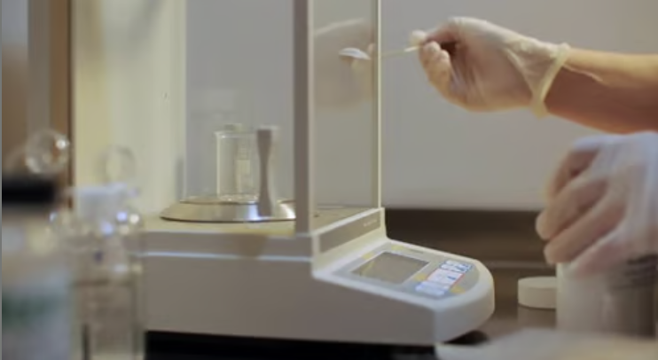
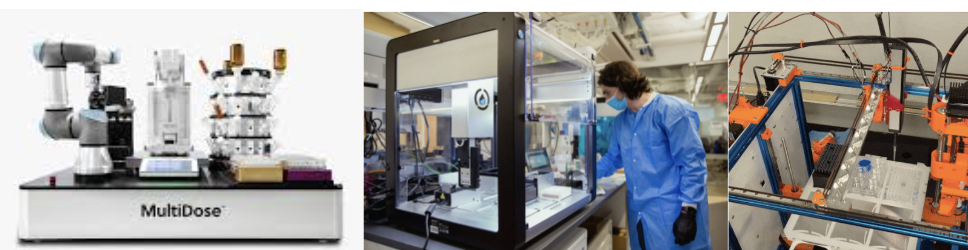
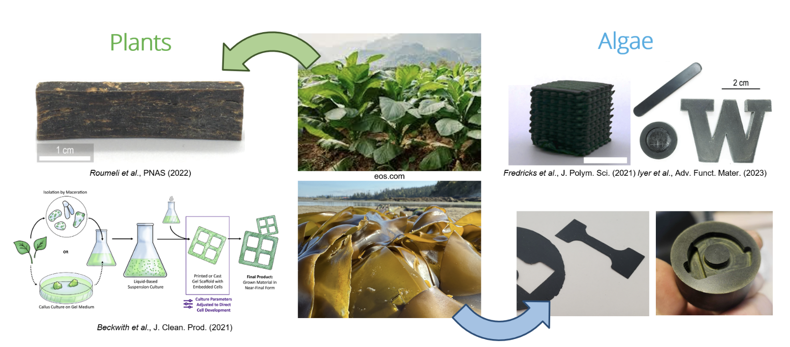
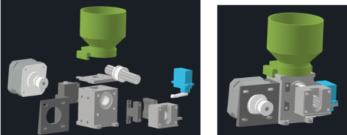
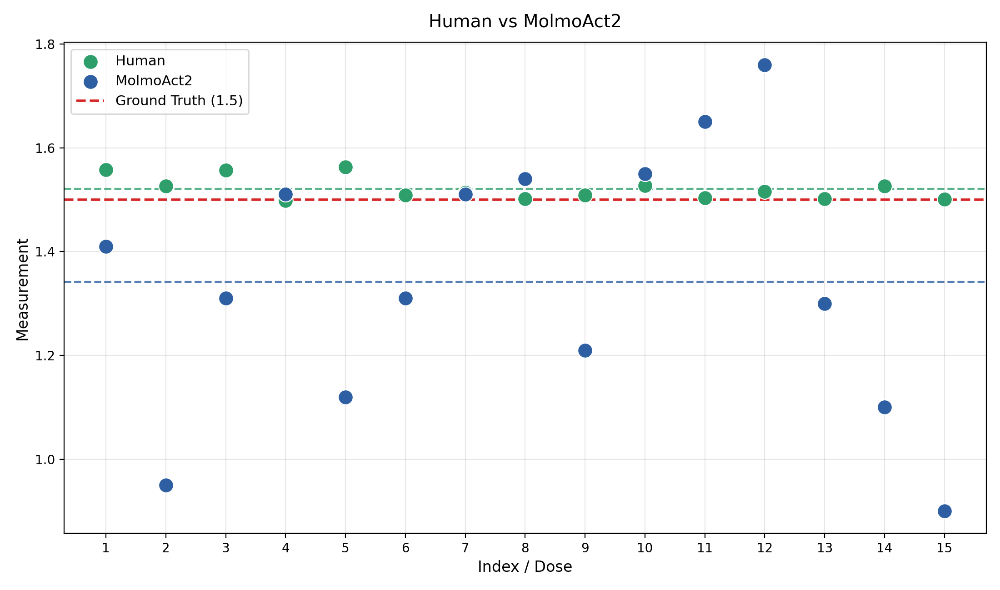

Most of the excitement around AI lives on a screen: chatbots, image generators, code assistants. But a lot of the work that actually moves science forward happens with hands — weighing reagents, transferring powders, setting up reactions. Drug discovery and materials discovery both depend on thousands of these small physical operations.
The dream behind robotics foundation models is simple to state and hard to deliver: give AI access to the physical world so it can do this work itself. For our final project, we wanted to test how close that dream is for a task that sounds trivial but is notoriously hard to automate — measuring out a small, precise amount of fine powder.

Lab automation isn't new. Walk into a well-funded lab and you'll find robotic arms pipetting samples all day. But today's systems share a set of limitations:
In other words, the robot bends the lab to fit the machine, not the other way around. We wanted to flip that.

The shift we're interested in moves away from custom-built robots that need expert pre-programming for domain-specific tasks, and toward general-purpose robot hardware driven by robotics foundation models — large multimodal models that take in vision, language, and robot state, reason about the scene, and output actions. The promise is general-purpose behavior in messy, unstructured environments, without writing a new program for every task.
The model we built on is MolmoAct2[1], an open-science robotics foundation model from Ai2. A few things make it a strong starting point:
People had already shown MolmoAct2 working out-of-the-box on unseen objects and environments. Our question was narrower and more demanding: could it learn a high-precision lab skill?
Our application comes from algae- and biomass-based sustainable materials research, where solid powders are a routine ingredient. Solid powder dosing shows up across many research domains and is one of the hardest things to automate, because powder behaves unpredictably: it clumps, it scatters, it sticks.
Our goal was deliberately practical: automate powder dosing inside an existing lab, using existing workflows, without significantly altering either one. No custom dispenser hardware, no special digital scale, no redesigned molds — just a general robot learning to do what a person does.


For reference, the "state-of-the-art" automated approach uses a dedicated motion platform[2] with a custom powder dispenser, special molds, and a scale wired for digital communication. It's reliable and accurate, but it relies on a fundamentally different mechanism than a human and a fully custom workflow. We intentionally did not use it.
We collected a human baseline first: an operator measured a 1.5 g target across 15 trials, with no removing or re-attempting. The results landed in a tight band, mostly within a few hundredths of a gram of target — a reminder of how good trained humans are at this. That band is the bar each model has to clear.
To keep the comparison fair, every model ran through the same protocol:
The model did learn the task. Some trials were excellent — one hit 1.51 g, essentially on target. But the spread was much wider than the human baseline, ranging from about 0.96 g on a light pour to 1.76 g on a heavy one.
The robot could clearly do the motion; what it lacked was the consistent fine control that keeps every trial close to target.

The honest takeaway is encouraging but sober: a general, open robotics foundation model can be fine-tuned to attempt a delicate lab task with only 50 demonstrations and no custom hardware — but it doesn't yet match a trained human's precision. The gap is mostly about variance, and that variance traces back to a few real bottlenecks: